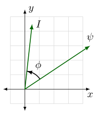
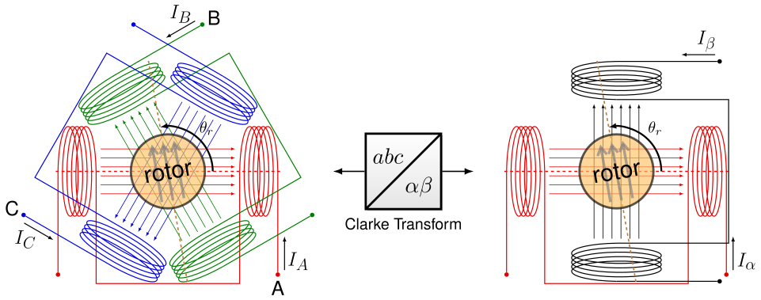
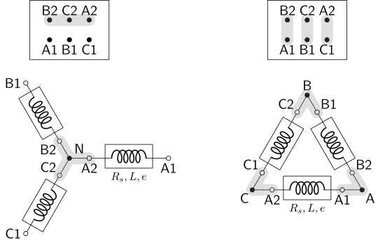
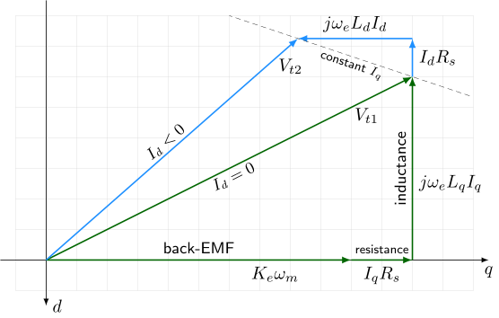
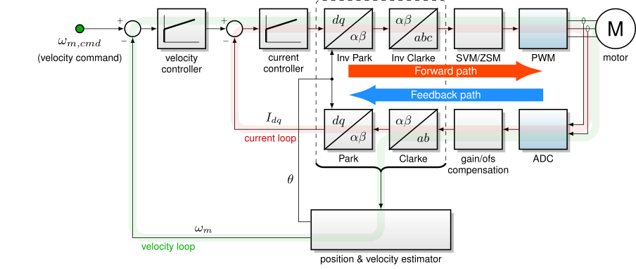

5.1.2. FOC 基础¶
MCAF 对电机电流采用磁场定向控制（FOC）。本节一般性地介绍 FOC 的理论，并给出一些针对 MCAF 实现的具体说明。
5.1.2.1. 转矩产生与参考坐标系¶
磁场定向控制（FOC） 的目标是以高带宽控制瞬时电磁转矩。这可以通过在某个电角度的参考坐标系中管理两个正交的电流分量来实现——尽管对初学者而言这并不直观。 \(\theta_e\)。电频率 \(\omega_e = \frac{d\theta_e}{dt}\) 是电角度的变化率。
电角度和电频率与机械角度和机械频率成正比，如公式 5.1所示，其中 \(N_p\) 为极对数。例如，一台六极电机， \(N_p=3\)，每旋转一圈（机械旋转）经历三个电周期。
电磁转矩 \(T_{em}\) 在三相旋转电机中与定子电流和转子磁链的叉积成正比，如公式 5.2所示。这里 \(\hat{z}\) 是沿旋转轴的单位矢量，x 和 y 是垂直于 \(\hat{z}\)的二维平面上的分量，而电流矢量是根据合成磁场与这些 x、y 轴的对齐关系得到的电流合成矢量。
角度 \(\phi\) （磁链矢量与电流矢量之间的夹角），如 图 5.1所示，在决定电磁转矩时起重要作用。如果两个矢量对齐，该角度 \(\phi\) 为零，不产生转矩。当磁链矢量与电流矢量垂直时转矩最大，此时 \(\sin \phi\) 在公式 5.2 中为 ±1。

图 5.1 磁链矢量、电流矢量及其夹角 \(\phi\) ，位于一个任意 \(xy\)坐标系中。¶
需要注意的是，这些 x 和 y 轴是 任意的 ——我们可以选取任意一组单位基矢量 \(\hat{x}\) 和 \(\hat{y}\) ，使它们与旋转轴 \(\hat{z}\)构成相互垂直的集合，使其叉积 \(\hat{x} \times \hat{y} = \hat{z}\)。
对这些基矢量有两种常见选择。其一是静止坐标系，通常与某一定子相对齐。图中左侧 图 5.2 是一个三相定子，其绕组相隔 120° 分布。这在磁链意义上等价于右侧所示、具有正交绕组 α 和 β 的两相定子。对于三相定子绕组中的任意电流组合 \(I_A, I_B, I_C\) ，转子所看到的同一磁场可以通过适当的电流组合 \(I_\alpha\) 和 \(I_\beta\) 流过两个用于产生定子磁场水平与垂直分量的“虚拟”线圈来获得。将三相量投影到这些虚拟正交线圈上的数学转换称为 Clarke 变换（克拉克变换），以它的提出者之一 Edith Clarke 命名。 [2]
{kind=link}

图 5.2 利用 Clarke 变换在每相量与 αβ 坐标系之间转换 角度参考通常与电机的第一相（在 ABC 标记中为 A 相，在 UVW 标记中为 U 相）以及 α 绕组对齐。转子的位置为某个电角度 \(\theta_r\) ，相对于这些角度参考。¶
Clarke 变换是一种线性变换，如公式 5.3所示，它可以作用于任意矢量 \(X\)，典型示例为电压 \(V\)、电流 \(I\)或磁链 \(\psi\)。
通常也用等价的矩阵形式表示，如公式 5.4所示，其变换矩阵为 \(T_{\alpha\beta}\)：
逆 Clarke 变换（公式 5.5）将 αβ 转换回 ABC，所用变换矩阵为 \(T_{\alpha\beta}{}^+:\)
我们可以代入 \((x,y) \Rightarrow (\alpha,\beta)\) 在公式 5.2 得到公式 5.6，即用静止坐标系中的量来描述转矩：
在静止参考坐标系中，磁链矢量 \(\psi_{\alpha\beta}\) 与电流矢量 \(I_{\alpha\beta}\) 并不固定，而是随转子磁场一同旋转。
另一种常见的基矢量选择是旋转参考坐标系，它与励磁的电角度 \(\theta_e\) 对齐，并随电频率 \(\omega_e\)的增加而增长。该参考坐标系的分量记为 \(d\) （“直轴”，direct）和 \(q\) （“交轴”，quadrature）。从 αβ 到 dq 轴的变换是绕角度 \(-\theta_e\)的旋转，如公式 5.7所示。这被称为 Park 变换（帕克变换），以 Robert Park 命名，他在 1920 年代末于通用电气工作时为分析同步电机的动态而提出了该方法。 [1] [3] 对于永磁同步电机，该参考坐标系称为同步参考坐标系。PMSM 的正确对齐发生在 d 轴与转子磁通对齐时，此时电角度 \(\theta_e\) 与转子的电角度 \(\theta_r\)。
逆 Park 变换（公式 5.8）沿相反方向旋转，将 dq 轴转换回 αβ 轴。
我们可以代入 \((x,y) \Rightarrow (d,q)\) 在公式 5.2 得到公式 5.9，即用同步坐标系中的量来描述转矩：
使用同步坐标系的优势在于：在稳态旋转下，为产生恒定电磁转矩 \(T_{em}\)，磁链矢量 \(\psi_{dq}\) 与电流矢量 \(I_{dq}\) 均为常量。这使得带积分项的电流控制器能够实现零稳态误差运行，同时也允许对转矩和磁通进行独立控制。
值得注意的是，对于不同类型的电机，参考坐标系的角度 \(\theta_e\) 与转子的电角度 \(\theta_r\) 不一定相同。对于永磁同步电机，参考坐标系应与转子的永磁体磁通对齐，因此 \(\theta_e = \theta_r\)。对于感应电机 \(\theta_e \ne \theta_r\)；电频率 \(\omega_e = \omega_r + \omega_s\) 其中 \(\omega_r\) 是以电频率表示的转子转速， \(\omega_s\) 是产生转子电流所需的转差频率。
5.1.2.2. 定子电压与磁通方程¶
5.1.2.2.1. 通用定子电压方程¶
本节到目前为止的 FOC 公式涉及转矩、角度以及磁链和电流的矢量分量。定子电压（即定子线圈两端的电压）是比磁链更相关的量，因为我们可以更直接地测量和控制电压。
从事 FOC 的电机控制工程师常谈论电压矢量 \(V_{dq}\) （位于旋转参考坐标系中）；尽管该电压矢量无法直接测量——并不存在实际的“d”和“q”线圈——但可以通过 Park 和 Clarke 变换从实际电机线圈的每相测量值中经数学推导得到。将电压、磁链和电流联系起来的定子电压方程，在以电频率 \(\omega_e\)旋转的参考坐标系中如下式 5.10所示。该方程对感应电机和永磁同步电机均成立。
这里 \(R_s\) 系数为定子电阻。
其中 \(\omega_e\psi\) 项被称为 速度电压 ，是旋转参考坐标系的产物；它们与电机的结构无关，即使对三相电感或变压器等其他负载，在以频率 \(\omega_e\)旋转的参考坐标系下进行 FOC 时也会存在。它们还代表了 d 轴与 q 轴之间一种有趣的交叉耦合行为。
5.1.2.2.2. PMSM 电压方程¶
对于 PMSM，磁链方程如公式 5.11 所示，将磁链矢量 \(\psi_{dq}\) 与电流矢量 \(I_{dq}\) 联系起来。
项 \(L_d\) 和 \(L_q\) 是 d 轴和 q 轴的定子电感，对于 表贴式永磁电机（SPMSM） 通常二者相等，而对于 内置式永磁电机（IPMSM）则通常不同， \(L_q > L_d\) 这是由结构上的有意差异造成的。对于 IPMSM，同步坐标系中的电感与转子位置无关，但在静止坐标系（每相或 αβ 坐标系）中测得的电感会随转子位置变化。
项 \(\psi_m\) 为永磁体磁链。
将磁链方程代入定子电压方程，可得到以电路电压和电流表示的定子电压方程，如公式 5.12：
从左到右，这些项依次代表电阻压降 \(IR_s\)、交叉耦合速度电压、改变电流所需的电压 \(L\frac{dI}{dt}\) 以及反电动势 \(\psi_m\omega_e = K_e\omega_m\)，其中 \(K_e = N_p\psi_m\) 通常称为反电动势常数或电压常数。
5.1.2.2.3. PMSM 转矩方程¶
PMSM 的磁链方程也可代入转矩方程（公式 5.9）以推导出公式 5.13 ，展示 PMSM 中的两个转矩项：
对齐转矩 或 永磁转矩，由转子永磁体与定子电流产生的磁场之间的对齐作用产生
磁阻转矩，由转子铁芯趋向于转向定子电流产生的磁场的趋势产生
对于 SPMSM， \(L_d = L_q\)，因此没有磁阻转矩，电磁转矩仅由电流的 q 轴分量产生。此时 d 轴电流被驱动至零（除 弱磁外），以降低 \(I^2R\) 定子中的损耗。
对于 IPMSM， \(L_d < L_q\)，磁阻转矩可通过控制 \(I_d < 0\)来帮助提高效率。其最优选择 \(I_d\) 是 最大转矩/电流比（MTPA） 算法的目标。
5.1.2.2.4. 每相等效电路¶
需要注意的是，本节的方程都是由每相等效电路模型推导得到的，如 图 5.3所示。该模型将三相星形连接 PMSM 的每个绕组视为绕组电阻 \(Rs\)、绕组电感 \(L\)和反电动势 \(e\) 串联在中性点与三个端子 A、B、C 之一之间。
{kind=link}
图 5.3 星形连接 PMSM 中每个定子绕组的每相等效电路¶
在该模型中，反电动势分量为正弦电压，相序为 A、B、C，彼此相差 120°。
在任意两端子间测得的线电阻为 \(2R_s\)，在任意两端子间测得的线电感为 \(2L\) （对 SPMSM 而言；对 IPMSM，请记住电感随转子角度变化）。在任意两端子间测得的线反电动势幅值为 \(|e| = \sqrt{3} K_e\omega_m\) 其中 \(K_e\) 为相（线至中性点）反电动势常数，单位为 V/(rad/s)。
5.1.2.2.5. 星形与三角形连接¶
每相模型同样适用于三角形连接的 PMSM。三角形连接的定子，如 图 5.4 所示，可以用一个等效的星形连接定子来建模，其 \(R_{s\sf Y} = \frac{1}{3}R_{s\Delta}\)， \(L_{\sf Y} = \frac{1}{3}L_{\Delta}\)、和 \(K_{e \sf Y} = \frac{1}{\sqrt{3}}K_{e\Delta}\)。由于连接方式的改变，三角形连接的绕组还涉及 30° 的相移。
{kind=link}
图 5.4 星形连接（左）与三角形连接（右）之间的每相等效关系。¶
了解星形—三角形转换对于具有可接成星形或三角形的独立相绕组的电机很重要，这在较大型电机中更为常见。这些电机有六个端子——A1、A2、B1、B2、C1、C2，或更常见的 U1、U2、V1、V2、W1、W2——可在接线盒中适当连接，如 图 5.5所示，根据端子短接片的安装方式接成星形或三角形。
{kind=link}

图 5.5 具有三个独立绕组的电机的接线盒连接（上）及所得电机拓扑（下）：左侧为星形连接，右侧为三角形连接。端子短接片以浅灰色显示。¶
非常大的电机可能有超过六个绕组端子，并能以多种方式重新连接；参见 IEC 60034-8。
IEC 60034-8 的附录 A2。不过，只要电机由制造商以三端子“黑盒”形式提供，其内部结构（星形或三角形）就无关紧要，三相电机的理论对两种连接方式同样适用。
5.1.2.2.6. 稳态与相量分析¶
在稳态下， \(\frac{d}{dt}\) （公式 5.12 中的）项为零，电压方程简化为公式 5.14
这些关系可以用电压相量图直观表示，如 图 5.6所示。深绿色箭头表示在 d 轴电流为零时，合成端电压 \(V_{t1}\)的反电动势、电阻和电感分量。这是 PMSM 在磁场定向控制下的典型工作状态。浅蓝色箭头表示将 d 轴电流控制为 \(I_d < 0\)时产生的附加电阻和电感分量。这发生在 弱磁运行期间，目的是利用电感压降 \(\omega_eL_dI_d\) 来抵消部分反电动势电压，从而降低端电压的幅值。
{kind=link}

图 5.6 PMSM 相量图¶
相量分析是确定 PMSM 电压需求的一种非常有价值且极其简单的方法。在使用各电机参数的单位时需要稍加留意，以使公式 5.14 成立：
每相等效模型以相电压（线至中性点）表示。
电阻和电感应使用相值（线值的一半）
反电动势应按相电压计算（\(1/\sqrt{3} \approx\) 线电压的 0.5774 倍）
如果电机在其额定最高温度附近运行，请注意温度系数：
在正常工作温度范围（-55 °C 至 +200 °C）内，铜定子绕组的电阻随温度近似线性增加。相对于 20 °C 时的值，铜电阻的温度系数约为 0.4%/°C。 [7]
无论 钕铁硼还是钐钴磁体，其剩磁都呈微弱的负温度系数，这意味着反电动势随温度升高而略有下降。
在计算 \(K_e\) 和 \(\omega_m\) （或 \(\psi_m\) 和 \(\omega_e\)）的乘积时，单位应保持一致：如果 \(K_e\) 的单位为 V/(rad/s)，则速度 \(\omega_m\) 应转换为 rad/s；如果 \(K_e\) 的单位为 V/kRPM，则速度 \(\omega_m\) 应转换为 kRPM。（1 RPM = \(\frac{\pi}{30}\) rad/s）
所有电压和电流应使用峰值而非有效值（RMS）。（1V RMS = \(\sqrt{2}\)V 峰值）
电机制造商在规定反电动势常数 \(K_e\) 时常常不一致且含糊。它可能以有效值或峰值、线电压或相电压、以及每 rad/s 或每 RPM 或每 kRPM 的电压来给出。
所得各分量 \(V_d\) 和 \(V_q\) 应按正交相加，如公式 5.15所示，以计算所需相端电压的幅值。
将相端电压乘以 \(\sqrt{3}\)。
即得到所需线端电压。如果所需最大线电压低于母线电压且二者数量级相当，则电机与驱动器匹配良好。（通常，最大线端电压 \(|V_{dq}|\) 为最小母线电压的 70%–95%，以留出足够的工程裕量，使电流仍能快速变化—— \(L\frac{dI}{dt}\) 项需要电压——即便考虑其他电压损耗，如 死区畸变 以及晶体管的导通压降。）
5.1.2.3. FOC 框图¶
FOC 控制器的一般结构是一个内部矢量电流环和一个外部速度环，如 图 5.7。
{kind=link}

图 5.7 通用 FOC 框图结构¶
内部矢量电流环包含一个在同步（dq）坐标系中工作的电流控制器。Park 和 Clarke 变换用于反馈通路，将测得的相电流转换到同步坐标系作为电流控制器的输入；同时用于前向通路，将期望的同步坐标系电压 \(V_{dq}\) 转换为三相桥中可实现的 PWM 占空比。
在其线性范围内，矢量电流环并无特别之处，通常由两个 PI 控制器实现，一个用于 d 轴，一个用于 q 轴。饱和与抗积分饱和应仔细设计，要从整体矢量控制器的角度考虑，而不是当作两个独立的单轴控制器。
5.1.2.4. 实现说明¶
“组件”一章提供了关于 磁场定向控制 在 MCAF 中实现细节的更多信息。
αβ 或 dq 坐标系中的电压以相电压（线至中性点）表示。每相电压相对于母线的负端。
5.1.2.5. 其他主题¶
5.1.2.5.1. 其他参考坐标系变换¶
除了上文所述的 Park 变换（\(\alpha\beta \rightarrow dq\)、公式 5.7）和 Clarke 变换（\(abc \rightarrow \alpha\beta\)、公式 5.4）形式外，还有两种常用的参考变换形式。
其一是完整的 3×3 Clarke 变换（\(abc \rightarrow \alpha\beta0\)) in 公式 5.16，所用变换矩阵为 \(T_{\alpha\beta 0}\)：
这里，零序分量 \(X_0\) 为共模电压。对于没有可访问中性点连接的电机，该电压是任意的，不影响电机运行。（在某些情况下零序分量确实有影响：绕组与电机外壳之间的寄生电容会导致所谓的 轴承电流 流过电机轴承，通过电放电逐渐损坏轴承。这被称为电蚀（electrical fluting），会缩短电机的使用寿命。 [4] [5] ）
值得注意的是，常见形式的 Clarke 变换（公式 5.4）和逆 Clarke 变换（公式 5.5）并非真正的互逆，因为它们的变换矩阵不是方阵，而是 伪逆。可以从 \(\alpha\beta \Rightarrow abc \Rightarrow \alpha\beta\) 完成一次完整往返，因为这两个矩阵的乘积之一为单位矩阵： \(T_{\alpha\beta}T_{\alpha\beta}{}^+ = I\)。但在另一方向上则不行， \(abc \Rightarrow \alpha\beta \nRightarrow abc\) 因为矩阵乘积 \(T_{\alpha\beta}{}^+T_{\alpha\beta}\) 不满秩。通俗地说，零序分量一旦经过 2×3 Clarke 变换就会丢失，且无法恢复。
另一方面，完整的 3×3 Clarke 变换是可逆的；3×3 逆 Clarke 变换如公式 5.17 所示，所用变换矩阵为 \(T_{\alpha\beta 0}{}^{-1}\)。
另一种常用的参考坐标系变换是 2×2 降阶 Clarke 变换（\(ab \rightarrow \alpha\beta\)），如公式 5.16所示，它允许仅由两个电流 \(I_A\) 和 \(I_B\) 在假设 \(I_A + I_B + I_C = 0\)。
MCAF 利用它由 A、B 相电流计算 I_αβ = T_AB I_AB（C 相未测量），下转换到 αβ 坐标系。MCAF 利用它由 A、B 相电流计算 \(I_{\alpha\beta} = T_{AB}I_{AB}\) （C 相未测量）。当未测量的相为 A 或 B 时，可以构造类似的矩阵 \(T_{BC}\) 和 \(T_{AC}\) 。
5.1.2.6. 参考文献¶
本节的部分内容改编自 2016 年 MASTERS 技术研讨会演讲 如何在电机控制中取得成功。